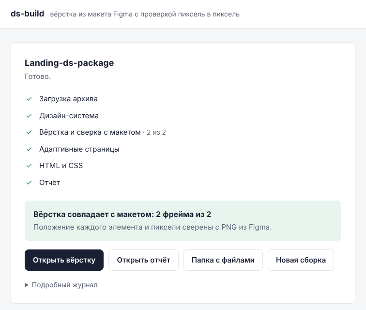

Вёрстка из Figma, проверенная по эталону
Плагин выгружает макеты. Программа на вашем компьютере строит из них дизайн-систему, верстает страницы и сверяет каждую с макетом: положение каждого элемента и каждый пиксель. Подходит и для макетов без стилей, компонентов и Auto Layout.
Landing / Desktop — тестовый макет, заголовок сдвинут на 2 px


Как это работает
Плагин только выгружает данные. Анализ, вёрстка и сверка идут локально, макеты никуда не отправляются.
Шаг 1, в Figma
Выгрузите макеты плагином
Одна кнопка, на выходе zip-пакет:
- PNG каждого макета как эталон
- слои с координатами, заливками, тенями, Auto Layout и текстами
- векторы, картинки, шрифты, переменные и стили
Шаг 2, на компьютере
Откройте архив в DS Builder
Программа сама:
- строит дизайн-систему: цвета, текст, отступы, аудит
- верстает каждый макет на её токенах
- сверяет с эталоном в Chrome и дорабатывает расхождения
Шаг 3, результат
Получите вёрстку и отчёт
Можно сразу работать дальше:
- HTML и CSS каждой страницы
- отчёт с наложением и картой различий
- токены для CSS, SCSS и Tailwind, а в Figma — переменные
Что значит «совпадает с макетом»
Геометрия ±0.5 px
Каждый элемент вёрстки связан со своим слоем в Figma и совпадает с ним по положению и размеру. Ошибка раскладки в 1 px не пройдёт, а отличия в отрисовке шрифтов на эту проверку не влияют.
Пиксели 0.1% и 0.5%
Скриншот страницы сравнивается с PNG из Figma. Вне текста допускается не больше 0.1% несовпадающих пикселей, в тексте не больше 0.5%: Figma и браузер по-разному рисуют пары букв. Пороги настраиваются.
Что делает программа
Всё на алгоритмах, без ИИ: повторяемо, бесплатно и проверяемо.
Дизайн-система из любого макета
Склеивает почти одинаковые цвета и называет их по шкале 50–950, определяет роли: фон, текст, граница, фирменный. Находит стили текста, шаг отступов, радиусы, тени и брейкпоинты.
Раскладка на flex
Auto Layout переносит как есть. Где его нет, строит колонки и строки по положению слоёв. Абсолютное позиционирование остаётся только для слоёв, которые перекрываются, и для блоков, которые иначе не сходятся с макетом. Иконки вставляются в страницу как SVG с цветами из токенов.
Сверка и автодоработка
Измеряет каждый элемент в браузере, сравнивает скриншот с PNG из Figma и показывает, какие слои дают расхождение. Для них подбирает поправки и оставляет только те, что приближают к эталону: на реальных макетах расхождение падает с 1.98% до 0.38%.
HTML и CSS, React и Vue
Чистая папка с обычными HTML и CSS, которую можно выложить на любой хостинг. Повторяющиеся блоки становятся компонентами, а различия между копиями — пропсами в проектах React и Vue на Vite. Каждый вариант сверяется с проверенной вёрсткой пиксель в пиксель.
Адаптивные страницы
Макеты одной страницы под разные ширины, например «Home / Desktop» и «Home / Mobile», собираются в одну страницу. На ширине каждого макета она совпадает с ним пиксель в пиксель, а между ними тянется по constraints из Figma. Тянется только там, где ничего не налезает и не вылезает за край.
Семантика без ИИ
Шапка, подвал, меню, кнопки, ссылки и заголовки получают свои теги по правилам. Повороты и маски переносятся точно. Блоки, которые дизайнер назвал header, nav, section, form, получают эти теги. Имена классов можно доверить ИИ: сначала локальная модель, затем бесплатные API.
Отчёт
По каждой странице: прошла ли проверку, наложение со шторкой, карта различий, проблемы контраста текста по WCAG.
Анализ макета для дизайнера
Кнопка «Только проверить макет» за несколько секунд показывает, что в файле мешает вёрстке: блоки без Auto Layout, безликие имена, копии вместо компонентов, нет состояний, переменных или стилей. С примерами слоёв и памяткой, как исправить.
Основа для ИИ-агента
В каждой сборке есть AGENTS.md — карта проекта: страницы и макеты, компоненты, токены, итог сверки и правила. PNG всех экранов лежат в screens/, служебные метки убраны из кода. Агент тратит токены на работу, а не на разбор шума.
Обратно в Figma
Токены импортируются кнопкой в плагине: переменные, текстовые стили и стили теней. Повторный импорт обновляет их, а не дублирует.
Установка
DS Builder ставится как обычная программа, без терминала. Плагин для Figma входит в неё. Нужны Figma Desktop и Google Chrome или Microsoft Edge: в браузере программа проверяет вёрстку.
Кнопки сразу скачивают последнюю версию. Плагин для Figma входит в программу, но его можно скачать и отдельно — например, дизайнеру, который только выгружает макеты.
Скачайте и установите
Нажмите кнопку для своей системы и запустите скачанный файл. Установщики пока без цифровой подписи, поэтому система спросит подтверждение один раз.
Windows: «Windows защитил ваш компьютер» → «Подробнее» → «Выполнить в любом случае».
macOS: если «не удаётся проверить разработчика» — Системные настройки → Конфиденциальность и безопасность → «Всё равно открыть».
Подключите плагин в Figma
В окне DS Builder нажмите «Плагина ещё нет в Figma?» → «открыть папку с плагином». Затем в Figma Desktop выберите Plugins → Development → Import plugin from manifest и укажите manifest.json из этой папки. Плагин появится под названием «DS Builder».
Скачали плагин отдельно? Распакуйте zip в постоянную папку и укажите manifest.json из неё. Новую версию распакуйте в ту же папку — Figma подхватит её сама.
Локальные плагины работают только в приложении Figma для компьютера.
Работа с макетом
От выгрузки до проверенной вёрстки за несколько минут.
Выгрузите макет
Запустите плагин в Figma. Если ничего не выделено, он выгрузит весь файл: все фреймы всех страниц. Нажмите «Пакет для вёрстки», скачается <файл> — ds-package.zip.
Перетащите архив в DS Builder
Выберите, что получить: HTML и CSS, React, Vue. Программа скачает бесплатные шрифты макета, построит дизайн-систему, сверстает каждый фрейм и сверит его с макетом.
Откройте результат
«Открыть вёрстку» — готовая папка с обычными HTML и CSS, её можно выложить на любой хостинг. «Открыть отчёт» — где вёрстка совпала с макетом, а где нет. Desktop и Mobile одной страницы собираются в одну адаптивную.
Верните дизайн-систему в Figma
В плагине выберите design-system/tokens.json из папки сборки и нажмите «Создать переменные и стили». Появятся коллекции переменных, текстовые стили и стили теней.

ИИ — по желанию и бесплатно
Без ИИ программа работает полностью. С ним классы и экраны получают понятные имена: «Desktop - 3» становится «Тарифы» с адресом /pricing. Всё, что предлагает ИИ, проверяется. Ключи вводит каждый пользователь в окне «ИИ», они хранятся только на его компьютере.
Бесплатный ключ Groq — самое простое
Откройте console.groq.com/keys, войдите через Google или почту, нажмите «Create API Key». Вставьте ключ в окне «ИИ» и нажмите «Проверить». Карта не нужна. Так же подключаются Gemini (aistudio.google.com/apikey) и OpenRouter: когда у одного кончается дневной лимит, программа берёт следующий.
Ollama — на своём компьютере
Бесплатно, без лимитов, макеты не уходят в интернет. В окне «ИИ» нажмите «Скачать Ollama», установите её, затем «Проверить снова» и «Скачать модель». Хватит 8 ГБ памяти; на слабом компьютере выберите qwen2.5:3b и очередь «сначала облако» — Ollama подхватит работу, когда кончится облачный лимит.
Любой ИИ по своему ключу
OpenAI, Anthropic Claude, DeepSeek, Mistral, xAI, Together AI, LM Studio, Jan или сервер компании — любой сервис, совместимый с OpenAI. Выберите сервис, вставьте ключ, нажмите «Загрузить список моделей». Платные сервисы списывают по своему тарифу.
Результаты на открытых макетах
5 открытых файлов Figma, 14 фреймов, около 1 300 слоёв. Для двух фреймов авторы выложили PNG-экспорт из Figma, это настоящие эталоны.
| Макет | Размер | Слоёв | Геометрия | Расхождение с эталоном |
|---|---|---|---|---|
| HackRPI, страница «спасибо» v2.1, без Auto Layout | 1440 × 1024 | 28 | 28 из 28 | 1.977% до, 0.381% после |
| HackRPI, страница «спасибо» v3 | 1440 × 1970 | 35 | 35 из 35 | 1.678% до, 0.207% после |
| Physionic, сайт клиники, desktop | 1440 × 5007 | 446 | 446 из 446 | эталона нет |
| Physionic, mobile | 414 × 9806 | 423 | 423 из 423 | эталона нет |
| Physionic, обзорная страница | 2624 × 2391 | 497 | 497 из 497 | эталона нет |
| HackRPI, ещё 7 фреймов: Discord, команда, практика | 360–1680 | 2–45 | все совпали | эталона нет |
Дизайн-система Physionic, построенная по макету, совпала с SCSS-переменными автора шаблона в 14 проверках из 14: фон, поверхность, оба цвета текста, акцент, палитра и шаг отступов.
Принципы
Сначала алгоритм
Всё, что можно решить кодом, решается кодом. ИИ появится только для задач на понимание и будет проходить ту же проверку с откатом, если стало хуже.
Плагин только выгружает
Вся логика в программе, где её можно тестировать без Figma. Плагин отдаёт данные и записывает обратно то, что программа построила.
Готово значит проверено
Страница не считается готовой без сверки с эталоном. Если проверка не прошла, отчёт показывает, где и почему.
Пока не умеет
- В React и Vue адаптивная страница только переключается по брейкпоинтам, без растяжения между ними.
- Состояния компонентов (наведение, нажатие, неактивно) из вариантов Figma пока не переносятся в CSS.
- Переменные из подключённых командных библиотек Figma плагин пока не видит.
- Платные шрифты нужно установить в систему самостоятельно.
Дальше по плану
- Состояния из вариантов компонентов: :hover, :active, :focus-visible, :disabled.
- Свойства компонентов Figma как props, имена текстовых стилей и привязка переменных.
- ИИ для спорной семантики и описаний картинок — с той же проверкой и откатом.
- Плагин в Figma Community.
Вопросы
Макеты куда-то отправляются?
Нет. Плагин не обращается к сети, программа работает на вашем компьютере. Из интернета скачиваются только бесплатные шрифты макета, один раз в локальный кэш.
Нужен ли ИИ или платные сервисы?
Нет. Анализ, вёрстка, семантика, компоненты, сверка, доработка и карта экранов работают без ИИ. Галочка «Имена от ИИ» даёт понятные имена классов и экранов, а «Доводить ИИ» проверяет смысл вёрстки (где кнопка, где ссылка, заголовки, подписи полей) и правит стили экранов, которые алгоритм не довёл до макета: остаются только правки, которые сверка подтвердила. Подключается ИИ в окне «ИИ»: бесплатный ключ Groq или Gemini, Ollama на своём компьютере или любой сервис по своему ключу.
Что если в макете нет стилей и Auto Layout?
Это основной сценарий. Дизайн-система собирается из значений, которые реально используются, а раскладка определяется по положению слоёв. Уменьшенные копии экранов распознаются и не попадают в шкалы.
Как подготовить макет, чтобы вёрстка была лучше?
Всё, что дизайнер указал явно — Auto Layout, компоненты, переменные, варианты состояний, имена блоков, — программа переносит в код точно, без догадок. Памятка для дизайнера — что и как сделать в Figma, с чек-листом перед выгрузкой.
Зачем нужен Chrome или Edge?
Вёрстка проверяется в настоящем браузере: страница отрисовывается, каждый элемент измеряется, скриншот сравнивается с эталоном. Программа берёт уже установленный Google Chrome, а если его нет — Microsoft Edge, который есть на любом Windows. Если браузер стоит в нестандартном месте, укажите путь в переменной CHROME_PATH.
Почему Windows или macOS предупреждает при установке?
У установщиков пока нет цифровой подписи: сертификаты платные. Каждая сборка программы перед выкладкой проверяется на тестовом макете на всех трёх системах. Подтвердить запуск нужно один раз, как описано в разделе «Установка».
Что прислать, если что-то не сработало?
Подробный журнал из окна программы (раскрывается под этапами сборки), консоль плагина (Plugins, Development, Show/Hide console), файл report.json из папки сборки и, если можно, сам пакет или один проблемный фрейм.
Поддержать проект
DS Builder бесплатный и с открытым кодом. Если программа экономит вам время, можно поддержать разработку переводом на карту.
Проверьте на своём макете
Установка, выгрузка, вёрстка и отчёт занимают около 10 минут.